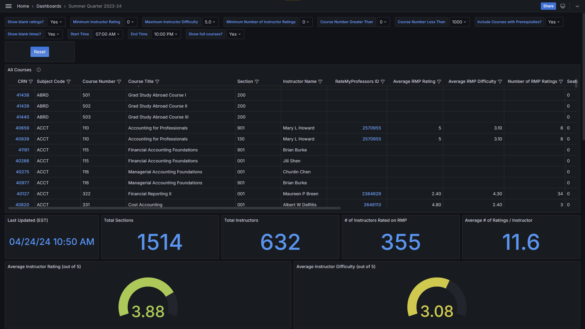
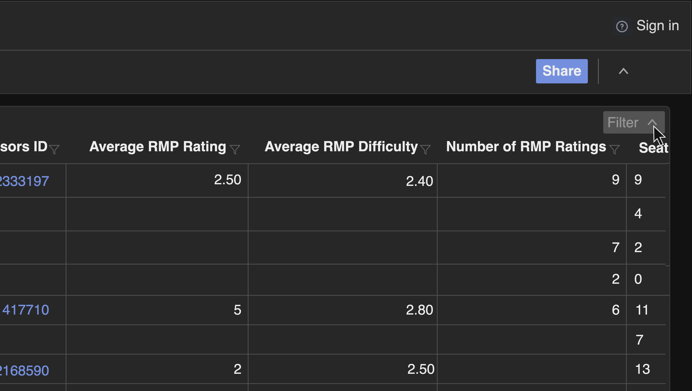
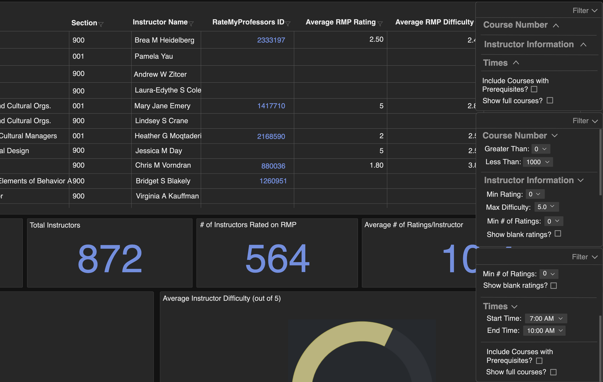
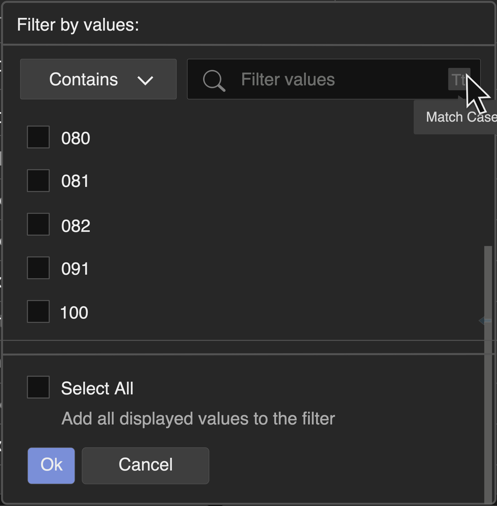

During my Introduction to Human-Computer Interaction course, I worked with three groupmates on a usability evaluation of our chosen interface. In our case, this was a website created by a Drexel undergraduate combining data from Drexel's Term Master Scheduler with the website Rate My Professor to help aid students in the class scheduling process. Through the gathering of user feedback, collaboration, and our knowledge of Don Norman's principles, we each created wireframes using Draw.io detailing proposed changes to the user interface.
The Drexel Scheduler had issues with its overall layout, information hierarchy, and confusing signifiers. Users had difficulty when it cames to navigating certain elements of the user interface, such as the central table containing information about each class and the corresponding professor as well as its accompanying search filters. Because the creator's intentions were to move the website from its original platform onto a custom domain and redesign it from the ground up, he requested for my group to provide user experience-related feedback to aid him in this process.
Overall, my group's goals for this redesign were to:
1. Create wireframes that both improve the layout of the website to better utilize whitespace
2. Highlight changes that can be made to certain UI elements to improve their usability
As part of the target audience for this product, students who attend Drexel University required to schedule our own classes for each term, my group took it upon ourselves to identify the pain points of the original interface. After creating individual wireframes recreating the structure and components page, mine shown below, we came together to discuss our findings.
After our discussion, we made the decision to each create our own wireframes illustrating proposed changes we would make to resolve pain points we each identified, with the intention of increasing the website's overall usability. I then connected my proposals to the design principles Don Norman outlined in his book The Design of Everyday Things, my focal point being the search filters used to narrow down the results of both the entire table and the individual columns within.
At first glance, the overall visibility of the Drexel Scheduler website was quite overwhelming to look at, with the multiple sections and confusing layout preventing a clear focal point for the viewer to be drawn to. The main culprits perpetuating this issue was the table-wide filters above the table, which took up an unnecessary amount of space at the top of the screen.
Because the schedule table should be the main focal point of the interface, I condensed the table-wide filters into a “Filter” button located at the top right of the scheduler table in order to prioritize the table's visibility. This feature also allows the user to adjust the visibility of these filters to their own liking.
 When the filter button itself is clicked on, a main dropdown menu becomes visible with the previous filters being sorted into a number of sections that act as category-specific dropdowns: the “Course Number” category containing filters related to the Course Number column in the table, the “Instructor Information” category pertaining to filters altering columns related to Rate My Professor data, and the “Times” category containing filters associated with the course time-related columns. Additional filters that do not fall within these categories are located in a separate section at the bottom of the dropdown. To improve the visibility of this Filter section, the category names are bolded and the filters are white in order to make them stand out against the background.
The original interface contained filters for each individual column in the main table. As seen in the image above, when attempting to utilize the search bar filter within the individual column filter, the word “Contains”, inequality symbols, and the word “Expression” are given as options. The word “Contains” would be relevant to include, as selecting that option implies that the results that show up would contain the user-inputted text. The inclusion of the inequality symbols as options, however, were not applicable to the filtering of non-numerical values and yet still appeared for such filters, demonstrating the lack of a constraint. As to the usage of “Expression”, the functionality of this option was also unclear. Within my personal evaluation, the inclusion of these options only served to confuse me, causing a disruption to my ability to perform my task.
Also shown in the top right of each image is the “Match Case” button, a feature that allows the user to specify whether the case of the text input to the search bar affects the search results. In my initial evaluation of the interface, I had not taken note of this feature as an affordance, as it was placed above the search bar away from the other search filters. My personal mental model saw such a feature as being in a spot that would make it more noticeable such as the search bar, and this was not reflected in the original design.
The images above present a wireframe aiming to constrain the search filtration feature to basic, user-friendly components. It removes the inequality symbols and “Expression” options, and presents two options for the search filter dropdown: “Contains” and “Does Not Contain”. The utilization of these phrases makes it clear to the user their usage: “Contains” serves the function stated previously while “Does Not Contain” shows the options that do not include the user-inputted text.
This wireframe reflects a modification to the feature that relocates it to be a part of the search bar. The choice to move the “Match Case” button to the search bar, the location that is being affected by its function, helps to better communicate to the user its functionality. Additionally, a gray box is added onto the button to help better distinguish the feature as a button rather than a design choice added purely for aesthetic reasons, which was my initial interpretation in the original interface.
My group presented our findings and proposals to our classmates, professor, and the student who developed the website, Zohair Ul Hasan. Zohair was grateful for our input, and commented on how he plans to take into account our feedback within his website redesign. In addition to our presentation, we wrote papers expanding upon our individual feedback that were given to the professor. This class, along with this project, allowed me to gain an intensive understanding of the process of implementing effective, user-friendly changes to a user interface.